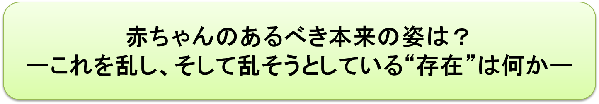
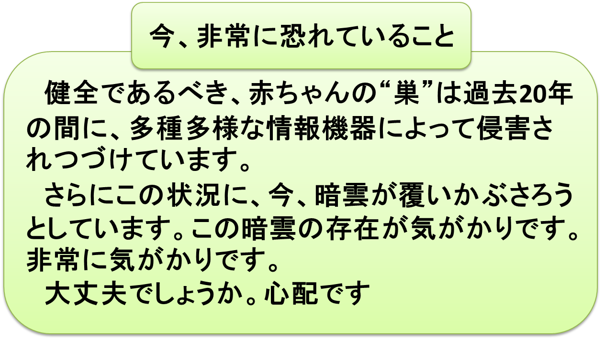
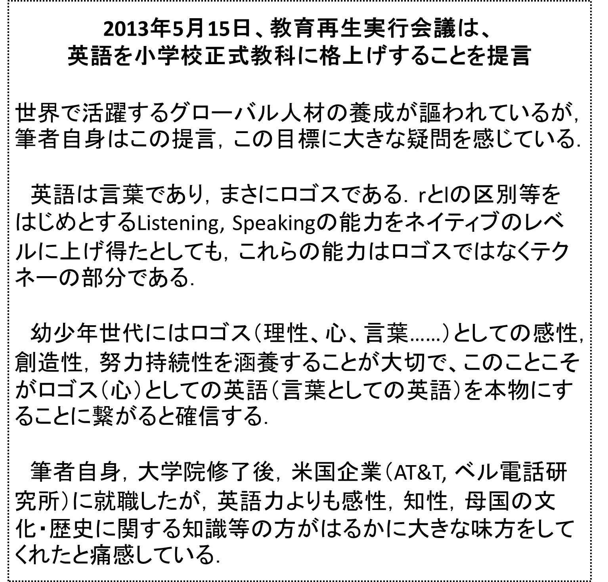
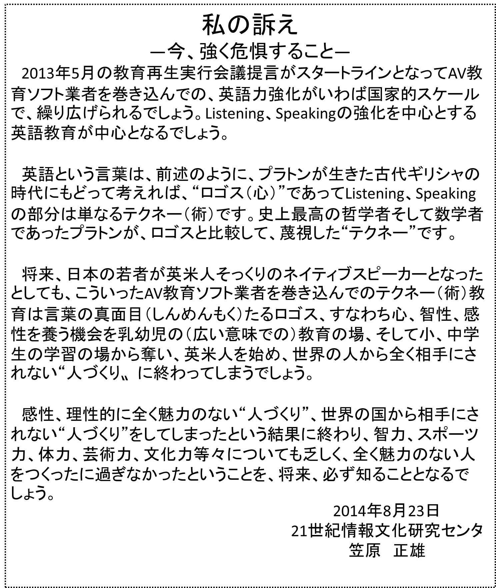

第１章 赤ん坊のあるべき本来の姿は？

- 500万年前、森から草原に進出した人類は直立二足歩行を開始しました。ヒトはホモ・サピエンス（かしこい人）への道を歩みはじめたのです！
- ……しかし無理な姿勢での直立二足歩行の報いとして、女性の産道が縮小し、正常な赤ん坊を産むことが危険となりました。古代人類にとって大きな試練の時期だったでしょう。
- この試練の時期を、“早期出産”という進化の形で、赤ん坊を産むことが危険になったという大きな問題をうまく解決したものの、高等哺乳類の赤ん坊の中で、ヒトの赤ん坊は非常に特異な存在、唯一“子宮外胎児”と呼ばれる存在、すなわち下等哺乳類特有の“就巣性”動物に属するということになってしまいました。
例えば下等哺乳類のドブネズミも、ヒトの赤ん坊と同じ、“就巣性”です。 - ヒトの赤ん坊以外の高等哺乳類の赤ん坊は、例外なく、全て“離巣性”です。因みに平均100グラム以下という、パンダの赤ちゃんも、立派な離巣性で、巣は必要でありません（第2章のコーヒーブレイク、一杯目のコーヒーです、をご覧ください）。
ここで、子育ての基本、そして少子化対策の基本について考えてみましょう。


非常に注意すべきことは、ヒトの赤ん坊の脳は、誕生直後から、他の高等哺乳類の赤ん坊とは比べものにならないほど活発に活動し、さまざまなやり方でまわりの人達とのコミュニケーションに励んでいるという衝撃的な事実です。
この赤ちゃんからのコミュニケーションへの働きかけに対して、お母様方が授乳される際のお顔の位置が、まさにぴったりの位置にあります。
この母子の間でつくられるいわゆる密接空間こそ、神がヒトのみに与えてくれた最良のコミュニケーション空間であると言えるでしょう。
私達は感謝の気持ちで、この空間を大切に守らなければならないと思います。
授乳時の赤ちゃんとお母様のお顔の間に形づくられているコミュニケーション空間。神様がヒトのみに与えてくれた類まれなコミュニケーション空間であることを何回も何回も強調させていただきましょう。
この素晴らしい、コミュニケーション空間の中で、お母様方をはじめとする、まわりの人達とのコミュニケーションの世界がうまく作られることによって、赤ちゃんの脳は急速に発達し、他の高等哺乳類の赤ん坊では、到底、到達できない非常に高いレベルの能力、すなわち理性、感性、創造性、努力持続性等々の、将来、社会人として生きていくための基本的な能力を急速に身につけていきます。
これらの能力は、高等哺乳類の赤ん坊たちの中では、唯一の例外的存在、すなわち就巣性動物であるヒトの赤ん坊にとって、必須の巣が、“健全な巣”であることによってのみ育まれます。
全てのヒトの赤ん坊は“健全な巣”が与えられ、上記の能力を平等に授けられる権利があります。この健全であるべき“巣”に近年、目まぐるしく進歩し、しかも爆発的に普及する各種情報機器が、生活環境の中に無反省そして無責任に入ってきています。赤ちゃんにとって、非常に悲しむべき「人権侵害問題」です。
赤ちゃん達が、理性、感性、創造性、努力持続性等々の人間としての基本的な能力を身に付けること、このことこそが、赤ちゃん達が将来社会人として生きていくための必須のプロセスであり、同時に我が国の将来を根底から支えるパワーとなります。
このプロセスにある赤ちゃん達をとり囲む我が国の状況は世界的に見て、どのくらいのレベルにあるでしょう。私が判断する限りとお断りさせていただきますが、世界の中で、最下位のレベルに近いのではないでしょうか。私がこう思う根拠を以下に示しましょう。

幾つかの大学、大学院で行ったアンケート、あるいは日常の会話を通して判断すると
“付けっぱなしのテレビを乳幼児が視聴することに問題はない！！”
としている人達が半数だと思います。プラスの効果が期待されるという意見すらあります。（笠原正雄HP:『赤ちゃんの人権宣言』をご存じでなかった皆様のお声をご覧ください）
大人の目線でとらえた考えと私は思います。赤ちゃんの目になって赤ちゃん達の成育環境をみることはとても難しいことのように思われます。赤ちゃんの目になって考えてほしいです。
ここ20年近く、私はこのような状況を深く憂慮し、さまざまな努力を重ねてきましたし、多くの人達のサポートを得、そして多くの人達から勇気づけられました。
……しかし過去10数年、状況はむしろ徐々に悪化の方向に進んでいるように感じます。肌で感じます。心配です。
そして、今、この赤ちゃん達の憂慮すべき育児環境に更に新たな暗雲が覆いかぶさろうとしています。大きな暗雲となることを恐れます。私は非常に心配します。

この赤ん坊の“巣”に、今、私の判断する限り、大きな大きな暗雲が新たに、そしてひそかに忍び寄っています。
上記不適切なメディア環境、生活環境に加えて赤ちゃんの世界に、私の判断する限りと断らせていただきますが、さらに大きな暗雲が、今、覆いかぶさろうとしています。
その暗雲とは以下のような“危険”です。こういうシナリオで、将来赤ちゃんの人権が決定的に踏みにじられないよう、祈るばかりです。私の心の底からの祈りです。
ヒトの赤ん坊の健全であるべき“巣”に、近い将来、早期教育という名の隠れ蓑をかぶって、必ず忍び寄るであろう大きな影の存在に、人々は気付くべきと、強く、非常に強く思います。その影とは、以下の出来事に端を発するであろう巨大な影のことです。関係者の方々に、強く注意を促します。
下記引用文章は、2014年1月電子情報通信学会（大正以来、100年に及ぶ歴史、会員数約3万5千）から出版した拙著：
『21世紀コンテンツの時代を人は如何に生きるか』
に記述している文章ですが、そのまま引用します。

上記の5月15日教育再生実行会議による提言以降、全国で繰り広げられるであろうシナリオ、私が非常に恐れるシナリオは、以下の通りです。これは勿論私が頭の中で想像し、強く危惧する最悪のシナリオであることを再度、強くおことわりしましょう。

日本の教育を皆さんと考える会

空しかった15年前の私の訴え
1991年、関西電力が起こした出来事（ここでは出し平ダム事故、ミニ原発事故と呼ばせていただきましょう）は当時、新聞、テレビなどでも大きく取り上げられました。
この事故の原因について関係者はテレビ等で「今回の事故の原因は予想外のことであった」という内容の主張をしていました。
“予想外、想定外のこととして自己の言い訳をする関係者の思想、私の言う想定外思想は、国を危うくする”として、
拙著『情報の道、ひとの道』中央職業能力開発協会、（2001年3月初版）
の第三章六節「我国は技術に如何に対処してきたか」において
“想定外と言い訳する思想”の危険性を訴え、関係者に反省を求めるとともに、第六節を
“今からでも決して遅くない”
として想定外思想を捨て去ってくれることを期待し、当時としては十分希望をもって、今からでも決して遅くはないという前向きの姿勢で第6節を締めくくりました。この想定外思想を捨て去ることにより、我が国の技術の世界はより安全な形で世の中に貢献できるであろうことを希望をもって期待したのでした。
この訴え、残念なことに効果は、ありませんでした。
あぁ、あぁ、あぁ……、私の警告からちょうど10年後の3月、世界を
一般の人々そして関係者の口々から（私が10年前に危険思想と位置づけた）、想定外思想、すなわち
“予想以上の津波であった。想定外だ。関係者を責めることはできない”
という意味の言葉が、事故直後の少なくとも三日間、色々な場所で繰り返されました。私は、この言葉の繰り返しに、ただただ悲嘆に暮れるばかりでした……。
以上について、詳しくは
笠原正雄HP―ミニ原発事故？―に分かりやすく解説されています。是非ご覧下さい。
今回こそ私の訴え（今、強く危惧すること）に耳を傾けてほしいです。さもなければ赤ちゃん時代をスタートとする乳幼児、小、中、高、大学の教育は完全に根底から崩壊してしまうでしょう。